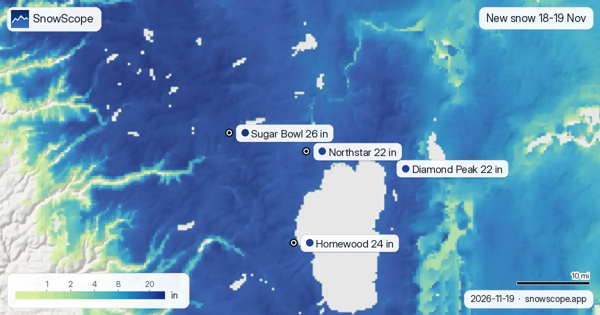

North Lake Tahoe snow by the gauges: 17 inches in two days at Donner Summit, record start at Sugar Bowl and Northstar
The snow gauges around North Lake Tahoe tell the story of this storm better than any forecast. The gauge at the Central Sierra Snow Lab near Donner Summit, at 6,890 ft, measured 19 inches of snow on Tuesday morning, 17 November 2026, and 36 inches on Thursday morning: 17 inches (43 cm) more in two days, with the heaviest snow still falling on Thursday. Sugar Bowl, Northstar and Diamond Peak now have more snow for the date than in any of the past 46 winters.
See the live snow forecast for Sugar Bowl in the SnowScope appSnow depth, powder alerts and the 3D map, free.
What the gauges measured
The federal SNOTEL network has automatic gauges in the forest and on the ridges around the lake. Between Tuesday and Thursday morning, the Mt. Rose ski area gauge above Diamond Peak, at 8,810 ft, gained 23 inches and now reads 43 inches. Ward Creek #3 above Homewood gained 13 inches to 27 inches, Marlette Lake above Incline Village 12 inches to 26 inches, and Rubicon #2 on the west shore 11 inches to 19 inches. Even Truckee #2, low at 6,500 ft, went from 5 to 16 inches.
The water in the snowpack is far above normal for the date: 840 % of the usual at Ward Creek #3, 633 % at Marlette Lake and 1250 % at Rubicon #2. Percentages that high happen because mid-November normally has very little snow; they mean the pack already holds what a typical early December would.

Heavy snow first, lighter snow on top
Comparing the snow depth with the water in it tells you how heavy the snow is. At the Snow Lab, 17 inches of new depth held 2.3 inches of water, about 7 inches of snow per inch of water; at the Mt. Rose gauge it was about 9 to 1. That is dense, wet snow, the kind locals call Sierra cement, typical of the first, warmer part of an atmospheric river, when the snow level rides near 5,000 to 6,000 ft and the flakes fall wet and settle as they land.
That will change. Behind Thursday's cold front the air turns colder and more unstable, and the Reno office expects a snow-to-liquid ratio of about 11 to 13 to 1, locally up to 14 to 1, for the rest of the storm, with 15 to 30 more inches above 7,000 ft by Friday morning. Heavy snow at the bottom and lighter snow on top is good for a base, and it skis better than it sounds, but it is also the layering that keeps the backcountry touchy for days.
On the slopes: a record start for the date
Our snow maps give Sugar Bowl about 26 inches (66 cm) of new snow on 18 and 19 November, Homewood about 24 inches (62 cm), Northstar 22 inches (57 cm) and Diamond Peak 22 inches (55 cm). At mid-mountain, Sugar Bowl now has about 40 inches (101 cm), Northstar 34 inches (86 cm) and Diamond Peak 29 inches (73 cm).
None of the past 46 winters had this much on 19 November. The usual depth on this date is about 4 inches at Sugar Bowl, 2 inches at Northstar and 1 inch at Diamond Peak, and between 12 and 15 of the 46 winters had bare ground there on this date. The previous best was 1994-95, with about 38 inches at Sugar Bowl, 28 inches at Northstar and 19 inches at Diamond Peak. The last three seasons had between 1 and 9 inches on this date at these three resorts.
When to go, and how to get there
Thursday is a storm day with very difficult travel; Interstate 80 over Donner Summit sees chain controls and closures in storms like this one, so check Caltrans before setting off. Friday morning brings a few more inches, and the Reno office expects a short dry and very cold window from Friday afternoon to Saturday morning before a weaker storm on Saturday afternoon. That makes Saturday morning the best time to ski the new snow.
Inside the resorts, expect the higher lifts first and thin cover on the lower runs. Outside the boundaries, the Sierra Avalanche Center has a Backcountry Avalanche Warning with HIGH danger until 4 AM Friday from Yuba Pass to Ebbetts Pass, which includes all the terrain around the lake.
Plan your trip with our planner
Our trip planner ranks the big western resorts by snow, lift ticket, places to stay and food for your own dates and budget. We set it to Saturday 21 to Monday 23 November, two nights; the North Lake Tahoe pick in the planner is Palisades Tahoe, a short drive from Northstar and Homewood.
More maps (external sites)
References and credits
- National Weather Service: active winter storm warnings and advisories www.weather.gov/
- USDA NRCS SNOTEL: measured snow depth and snow water www.nrcs.usda.gov/resources/data-and-reports/snow-and-climate-monitoring-predictive-maps
- Avalanche.org: US avalanche forecasts avalanche.org/
About these numbers
New snow and snow on the ground at the resorts: SnowScope snow maps for 18-19 November 2026, upper slopes unless a height is given; Friday to Sunday are forecast. Past winters: the same date in each of the 46 winters since 1980-81, at the height given. Measured gauges: USDA NRCS SNOTEL, morning readings. Warnings and forecast discussions: National Weather Service, 19 November 2026.
Cite this report
For research, teaching or the press: the numbers and charts are free to reuse under CC BY 4.0 with this citation.
SnowScope (2026), North Lake Tahoe snow by the gauges: 17 inches in two days at Donner Summit, record start at Sugar Bowl and Northstar, https://snowscope.app/blog/en/2026/11/north-lake-tahoe-snow-gauges-sugar-bowl-northstar-diamond-peak-19-november-2026.html, accessed 2026-11-20
SnowScope (Atlas Labs). (2026, November 20). North Lake Tahoe snow by the gauges: 17 inches in two days at Donner Summit, record start at Sugar Bowl and Northstar. SnowScope snow reports. https://snowscope.app/blog/en/2026/11/north-lake-tahoe-snow-gauges-sugar-bowl-northstar-diamond-peak-19-november-2026.html
BibTeX
@misc{snowscope2026northlaketahoesnowgauges,
author = {{SnowScope (Atlas Labs)}},
title = {North Lake Tahoe snow by the gauges: 17 inches in two days at Donner Summit, record start at Sugar Bowl and Northstar},
year = {2026},
month = nov,
howpublished = {\url{https://snowscope.app/blog/en/2026/11/north-lake-tahoe-snow-gauges-sugar-bowl-northstar-diamond-peak-19-november-2026.html}},
note = {Published 2026-11-20 00:49 UTC; accessed 2026-11-20}
}· CC BY 4.0 · Methods, data and tools →
Follow Sugar Bowl
Free: a message when fresh snow is coming, and the forecast every morning.
More snow reports

Schweitzer's 3-Pack gives three days for $249 on a ridge rising from 4,010 ft to 6,390 ft. Mid-mountain snow on 15 December averages 35 in (90 cm), with 85 % of winters above 20 in (50 cm).

Local Missoula resort near 7,530 ft (2,296 m) with $78 weekday lift tickets. Mid and top slopes typically hold 30–37 in (76–93 cm) by mid-December. Data from 13 November 2026.

Loveland sells $60 online tickets through December 13, then $159 from December 14. Early December snow averages 20 in (50 cm) at mid-mountain, but the base is half as deep as mid-winter.